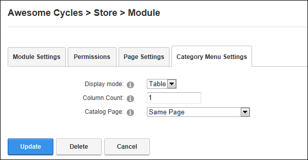

Managing Category Menu Settings
How to manage the category menu settings of the Store module.
- Go to the Store Menu module.
-
- Select the Category Menu Settings tab.
- At Display Mode, select from these options:
- Table: Displays categories inside an HTML table. Customers must click on a parent category to view any child categories. This is the default settings.
- List: Displays all categories on the page at the same time. Child categories are indented below their parent categories. This option allows web designers use jQuery or Java.
- In the Column Count text box, enter the number of columns to use when displaying categories. In the below example, a column count of two ( 2 ) is used.
- At Catalog Page, select the page where the Store Catalog module is located. Typically this will be Same Page, which is the default setting. You may however prefer to have two Store Menus for your store. E.g. You may have one Store Menu module on the Home page of your site that drives people to your store. In this case, you would set Store Menu module on the Home page to direct to the page name of your Store.

-
Click the Update button.